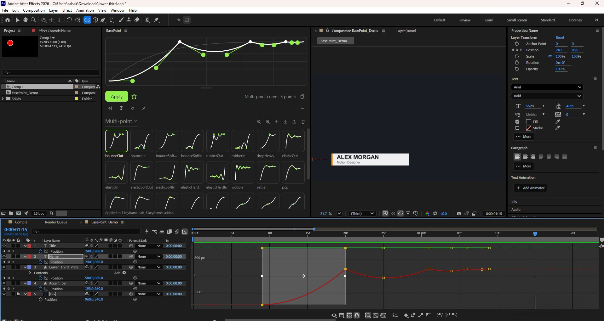

Multi-point curves
Bounce, elastic, wind-up, overshoot and stepped curves become ordinary keyframes with exact speed and influence. Nothing to render-check.
After Effects panel · CEP · AE 2022+
EasePoint applies multi-point curves by adding the in-between keyframes for you, each with the exact speed and influence. No expressions. The Graph Editor shows exactly what you drew.
Full version during the trial · one license, two computers
Bounce, elastic, wind-up, overshoot and stepped curves become ordinary keyframes with exact speed and influence. Nothing to render-check.
When a curve overshoots or bounces, a keyframe lands on every turning point, so the layer travels back along a straight line instead of curling.
Standard easing, AE Easy Ease at 33/50/75/90%, web and Material curves, broadcast curves for lower thirds, bounce and spring curves.
Drag handles, double-click to add points, mirror Out to In, or paste cubic-bezier values from CSS.
Linear, Easy Ease, Hold or Auto Bezier — set separately on the incoming and outgoing side.
Pull the curve from existing keyframes back into the editor, including multi-point runs, and save it as your own preset.

$12 one-time
Free
Payments are handled by our merchant of record; VAT or sales tax is added at checkout where it applies.
After Effects 2022 and newer. EasePoint is tested on Windows. macOS has not been tested yet — please use the trial on a Mac before buying.
Download the free ZXP Installer, drag EasePoint.zxp onto it, restart After Effects and open Window › Extensions › EasePoint.
The full version runs for 7 days. After that, Apply, Read keys and keyframe types ask for a license key; your presets stay where they are.
Only to activate. After that EasePoint works offline and re-checks the key about once a week.
Yes. Tools › License… › Deactivate frees the seat, then activate on the new computer. One key works on two computers at a time.
No. Everything is applied as standard keyframes with temporal ease, so projects render anywhere without EasePoint installed.